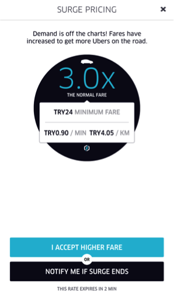
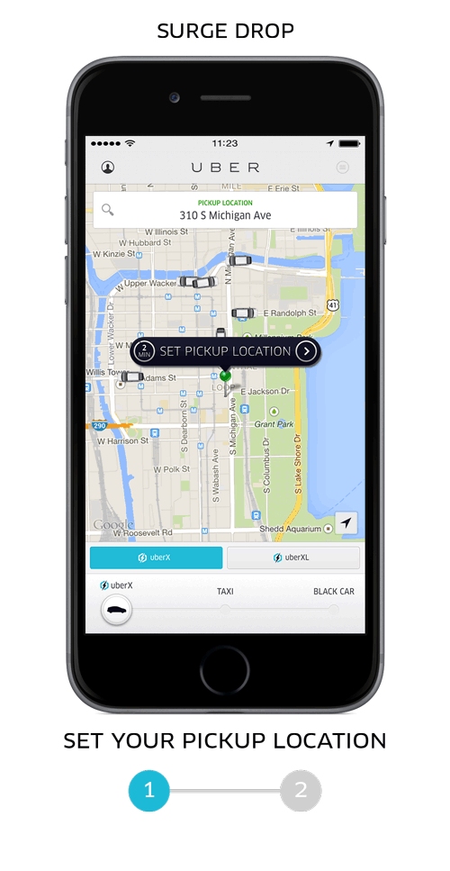
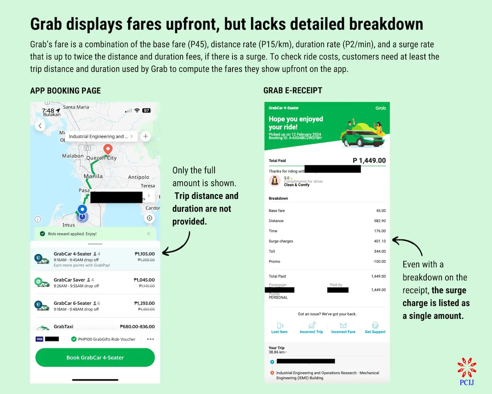
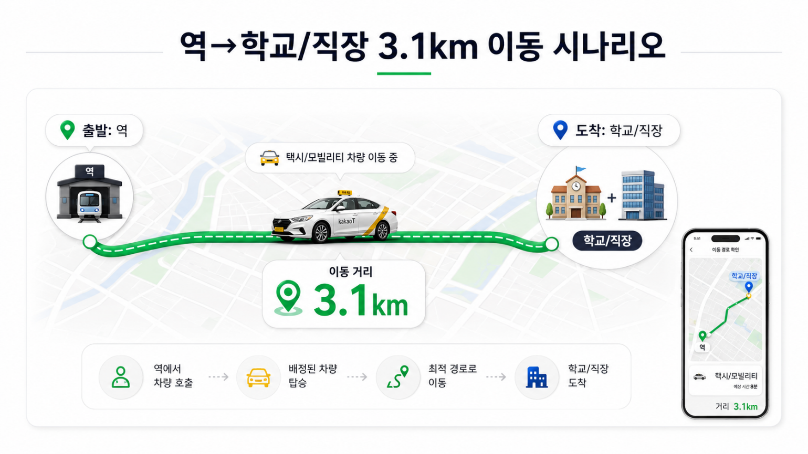
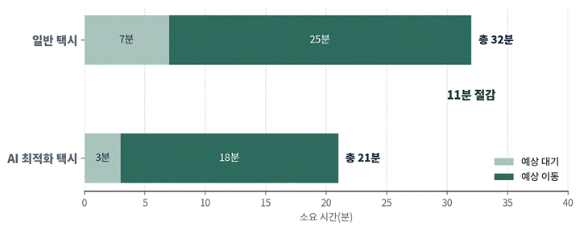
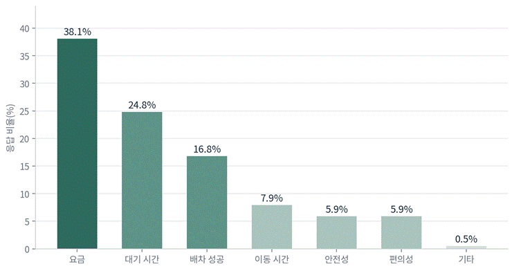
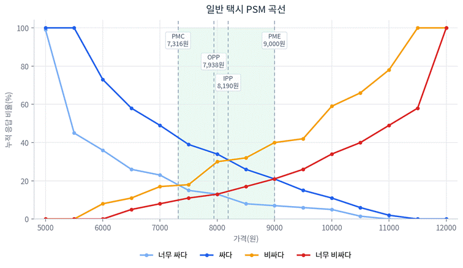
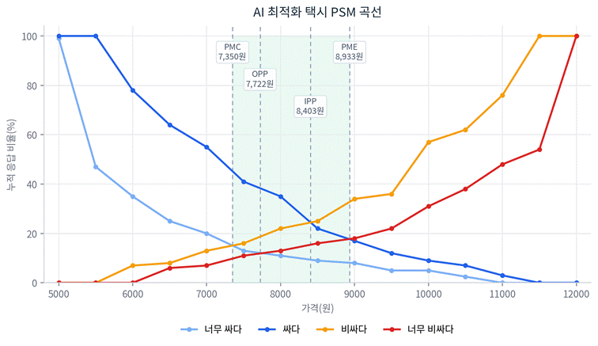
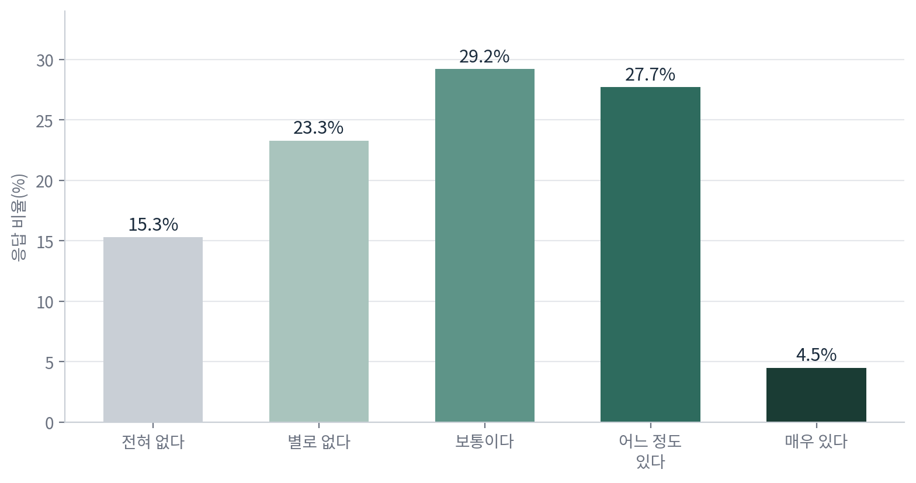
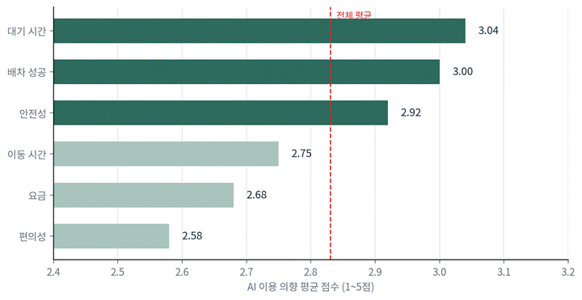

AI 모빌리티AI Mobility
AI 기반 배차·가격·수요 예측AI-Based Dispatch, Pricing, and Demand Prediction
지영, 미지Jiyoung, Miji
시간을 파는 모빌리티: AI 기반 최적화 택시에 소비자는 얼마까지 지불할까AI 기반 배차 최적화와 소비자 가격 민감도(WTP) 분석Selling Time — Mobility: How Much Will Consumers Pay for AI-Optimized Taxis? AI-Based Dispatch Optimization and Consumer Price Sensitivity (WTP) Analysis
6팀 유지영, 한미지Team 6 — Yoo Jiyoung, Han Miji
우리는 더 이상 차를 사지 않는다We No Longer Buy Cars
지난해 차를 판 한 직장인의 한 달은 이렇게 흘러간다. 출퇴근은 지하철, 장보기는 새벽배송, 주말 나들이는 카셰어링, 비 오는 밤이나 늦잠 잔 아침엔 택시. 차를 굴릴 때보다 돈이 덜 든다는 계산이 서자, 그는 미련 없이 차 키를 넘겼다.A professional's month after selling their car last year flows like this: subway for commuting, dawn delivery for groceries, car-sharing for weekend outings, taxis on rainy nights and mornings after sleeping in. Once the calculation showed it costs less than operating a car, they handed over the keys without a second thought.
그는 특별한 사람이 아니다. 소비의 무게중심이 ‘소유’에서 ‘공유’로 옮겨가고 있다는 흔한 신호 중 하나일 뿐이다. 차값과 유지비 부담, 그리고 굳이 차를 가지지 않아도 되는 도시의 이동 환경 속에서, 20~40대를 중심으로 차량 소유는 줄고 있다. 반대로 필요할 때만 빌려 타는 카셰어링 결제액은 팬데믹 이전 기록마저 넘어섰다. 시장도 같은 방향을 가리킨다. 국내 모빌리티 서비스 시장은 2018년 약 9천억 원에서 2022년 2조 4천억 원 규모로 연평균 28%씩 성장했고, 컨설팅사 롤랜드버거는 2030년이면 차량공유 시장이 전체 자동차 산업 이익의 40%를 차지할 것으로 내다봤다.This is not a unique individual. It is just one common signal that the center of gravity in consumption is shifting from 'ownership' to 'sharing.' Amid the burden of car prices and maintenance costs, and urban mobility environments where owning a car is not strictly necessary, vehicle ownership is declining, centered on those in their 20s to 40s. Conversely, payments for car-sharing — renting only when needed — have surpassed pre-pandemic records. The market points in the same direction. Korea's domestic mobility service market grew at an annual average of 28%, from approximately 900 billion won in 2018 to 2.4 trillion won in 2022, and consulting firm Roland Berger projected that the vehicle-sharing market will account for 40% of total automotive industry profits by 2030.
이 전환의 한가운데에 모빌리티 플랫폼이 있다. 차를 직접 소유하는 대신, 우리는 카카오 T를 켜고 차 한 대를 ‘부른다’. 수요자와 공급자를 실시간으로 연결하고, 가장 가까운 차를 가장 빠른 경로로 붙여주는 일 — 이것이 플랫폼이 파는 상품이다. 자동차 산업의 경쟁이 ‘좋은 차를 만드는 일’에서 ‘좋은 이동을 연결하는 일’로 한 축을 옮기는 동안, 제조업이 아니라 플랫폼 비즈니스가 새로운 모빌리티 경쟁의 무대가 되었다.At the center of this transition is the mobility platform. Instead of owning a car ourselves, we open Kakao T and 'call' a car. Connecting demand and supply in real time, matching the nearest car via the fastest route — this is the product the platform sells. As one axis of automotive industry competition shifted from 'making good cars' to 'connecting good mobility,' it is platform business, not manufacturing, that has become the stage for the new mobility competition.
이제 배차는 AI가 한다Dispatch Is Now Done by AI
그렇다면 이 ‘연결’은 구체적으로 어떻게 이뤄질까. 우리가 매일 누르는 호출 버튼 뒤에서 가장 크게 달라진 것이 바로 배차 방식이고, 그 변화의 폭을 알아야 이 글이 던지는 질문도 의미를 갖는다. 과거 택시가 길에서 잡거나 전화로 부르는 교통수단이었다면, 오늘날의 모빌리티 플랫폼은 위치·목적지·시간대·주변 차량·도로 상황을 실시간으로 분석해 이동 경험 전체를 설계하는 운영 시스템에 가깝다.So how does this 'connection' concretely happen? The biggest change behind the call button we press every day is the dispatch method, and understanding the breadth of that change gives the question this article asks its meaning. If the taxi of the past was a means of transport hailed on the street or called by phone, today's mobility platform is closer to an operating system that analyzes location, destination, time of day, nearby vehicles, and road conditions in real time to design the entire mobility experience.
핵심은 AI 배차다. 승객이 호출 버튼을 누르는 순간, 시스템은 단순히 가장 가까운 차를 찾지 않는다. 호출이 발생한 요일과 시간대, 출발지·도착지 주변의 실시간 택시 수요·공급, 각 기사의 호출 수락률과 예상 도착 시간(ETA)을 동시에 계산해 ‘수락할 가능성이 높으면서 가장 빨리 도착할 수 있는’ 기사 한 명에게 콜카드(호출 알림)를 보낸다. 그 기사가 받지 않으면 다음으로 빠른 기사에게 순차적으로 넘어가고, 경로 역시 실시간 교통과 우회 가능성까지 반영해 같은 거리라도 덜 막히는 길을 고른다. 이 방식이 도입된 뒤 카카오 T의 평균 배차 대기 시간은 14.1초에서 8.6초로 약 39% 줄었고, ‘골라잡기’나 단거리 기피 같은 고질적 문제도 완화됐다. 2025년 카카오 T 10주년 발표에서는 평균 배차 6.6초, 탑승 성공률 94%가 공개됐다. 결국 이 글에서 말하는 ‘AI 최적화 택시’란 별도의 고급 차종이 아니라, 일반 택시 호출에 이 배차·경로 최적화가 얹혀 대기 시간과 이동 시간을 줄여주는 호출을 뜻한다.The core is AI dispatch. The moment a passenger presses the call button, the system does not simply find the nearest car. It simultaneously calculates the day of the week and time of the call, the real-time taxi supply and demand around the origin and destination, and each driver's call acceptance rate and estimated time of arrival (ETA), then sends a call card (call notification) to a single driver who is 'likely to accept and can arrive fastest.' If that driver does not accept, it passes sequentially to the next fastest driver, and the route also reflects real-time traffic and detour possibilities to choose the less congested road for the same distance. After this method was introduced, Kakao T's average dispatch wait time decreased from 14.1 seconds to 8.6 seconds — about 39% — and chronic problems like cherry-picking rides and short-trip avoidance were also alleviated. Kakao T's 10th anniversary announcement in 2025 revealed an average dispatch time of 6.6 seconds and a ride success rate of 94%. Ultimately, the 'AI-optimized taxi' in this article refers not to a separate luxury vehicle type, but to a call where this dispatch and route optimization is layered onto a regular taxi call to reduce wait time and travel time.
이 기술은 가격과도 맞물린다. 다이내믹 프라이싱은 특정 시간대·지역의 수요 공급 불균형을 가격으로 조정하는데, AI 배차가 그 해외에서는 Uber의 서지 프라이싱이 가장 대표적인 사례다.This technology also interlocks with pricing. Dynamic pricing adjusts supply-demand imbalances in specific time zones and areas through price, and the most representative overseas example is Uber's surge pricing.


Uber Surge Pricing 화면Uber Surge Pricing Screen
Uber는 수요가 높아 요금이 상승하는 경우 앱이 승객에게 이를 고지하고, 승객은 더 높은 요금을 지불하거나 요금이 내려갈 때까지 기다릴 수 있다고 설명한다. 또한 Uber의 upfront pricing은 예상 시간, 거리, 교통 상황, 수요·공급 상황 등을 반영해 탑승 전 예상 요금을 제시하는 구조다.Uber explains that when demand is high and fares increase, the app notifies passengers, and passengers can either pay the higher fare or wait until fares come down. Also, Uber's upfront pricing is structured to present an estimated fare before boarding, reflecting expected time, distance, traffic conditions, and supply-demand situation.

Grab 요금 안내 화면Grab Fare Information Screen
Grab 역시 동적 가격과 수요 예측을 플랫폼 운영의 일부로 활용한다. Grab은 동적 가격이 실시간 수요·공급 조건에 따라 변동되며, 운임은 도시의 흐름, 러시아워, 우천, 주요 이벤트, 출발·도착지에 따라 달라질 수 있다고 설명한다. 또한 예측 모델이 기사 인센티브와 ride pricing을 포함한 다양한 운영 의사결정의 기반이 된다고 밝히고 있다.Grab also uses dynamic pricing and demand prediction as part of platform operations. Grab explains that dynamic pricing varies according to real-time supply-demand conditions, and fares can vary depending on city flow, rush hours, rain, major events, and departure/arrival locations. It also states that prediction models serve as the basis for various operational decisions including driver incentives and ride pricing.
국내에서는 운임 자체의 자유로운 변동 폭이 해외보다 제한적이기 때문에, 다이내믹 프라이싱은 운임보다는 호출료, 사전확정요금, 기사 인센티브, 플랫폼별 유료 호출 옵션의 형태로 구현되는 경우가 많다. 국토교통부는 2022년 심야 택시난 완화 대책의 일환으로 플랫폼별 심야 탄력 호출료 추진을 발표한 바 있다. 이는 국내에서도 수요가 집중되는 시간대에 가격 또는 호출료를 통해 배차 확률을 높이려는 시도가 제도권 안에서 논의되었음을 보여준다.In Korea, since the free variation range of fares themselves is more restricted than overseas, dynamic pricing is often implemented in the form of call fees, pre-confirmed fares, driver incentives, and platform-specific paid call options rather than fares themselves. The Ministry of Land, Infrastructure and Transport announced the pursuit of platform-specific late-night flexible call fees in 2022 as part of measures to ease the late-night taxi shortage. This shows that attempts to increase dispatch probability through pricing or call fees during periods of concentrated demand were also discussed within the regulatory framework in Korea.
AI 배차 시스템은 이 가격 전략을 정교화하는 기반 기술이다. 카카오모빌리티는 AI 배차 시스템이 승객의 호출을 수락할 가능성이 높으면서도 승객에게 가장 빠르게 도착할 수 있는 위치의 기사를 배차하는 방식으로 작동한다고 설명한다. 2025년 카카오 T 택시 10주년 발표에서는 평균 배차 시간이 6.6초, 탑승 성공률이 94%로 공개되며 배차 시스템 고도화가 실제 운영 성과로 연결될 수 있음을 보여주었다.The AI dispatch system is the foundational technology that refines this pricing strategy. Kakao Mobility explains that the AI dispatch system works by dispatching a driver who is likely to accept a passenger's call while also being positioned to arrive at the passenger most quickly. Kakao T's 10th anniversary taxi announcement in 2025 revealed an average dispatch time of 6.6 seconds and a ride success rate of 94%, demonstrating that dispatch system advancement can translate into actual operational performance.
티머니GO 온다택시 사례는 국내형 간접 다이내믹 프라이싱의 가능성을 보여준다. AWS 기술 블로그에 따르면 티머니는 시간대, 위치, 교통상황, 날씨 등을 반영해 택시 호출별 실시간 성공 확률을 예측하는 ML 모델을 운영했으며, 이를 통해 성공 확률이 낮은 호출에 선택적으로 개입할 수 있는 체계를 구축했다.The T-money GO ONDA Taxi case demonstrates the possibility of domestic-style indirect dynamic pricing. According to the AWS Tech Blog, T-money operated an ML model that predicts real-time success probability for each taxi call, reflecting time of day, location, traffic conditions, and weather, thereby building a framework for selectively intervening in calls with lower success probabilities.
그래서 우리는 직접 물어보았다So We Asked Directly
여기서 자연스럽게 따라오는 질문이 있다. AI가 수요를 예측하고 가장 가까운 기사를 붙이고 덜 막히는 길로 우회시켜 우리의 시간을 줄여줄 때, 그렇게 줄어든 시간에 우리는 얼마까지 지불할 의향이 있는가. 답을 구하기 위해 우리는 같은 출발지에서 같은 목적지로 가는 두 택시를 나란히 놓고 202명에게 값을 매기게 했다. ‘역에서 학교·직장까지 약 3.1km, 출근길 정체가 있는 상황’을 가정하고, 일반 택시(대기 7분·이동 25분, 총 32분)와 AI 최적화 택시(대기 3분·이동 18분, 총 21분)를 비교하게 한 것이다. AI 쪽이 총 11분을 줄여주는 조건이다. 이 11분은 그저 시간 차이가 아니다. 지각 여부를 가르고, 심야 귀가의 불안을 더는 차이다. 그래서 우리는 이것을 ‘조금 빠른 택시’가 아니라 ‘이동 실패 가능성을 낮추는 옵션’으로 제시했다.A question naturally follows from this. When AI predicts demand, matches the nearest driver, and reroutes via less congested roads to reduce our time — how much are we willing to pay for that saved time? To find the answer, we placed two taxis going from the same origin to the same destination side by side and had 202 people assign a value. Assuming 'approximately 3.1km from a station to school or work, with rush-hour congestion,' we had them compare a regular taxi (7-minute wait, 25-minute ride, 32 minutes total) with an AI-optimized taxi (3-minute wait, 18-minute ride, 21 minutes total). The AI side saves a total of 11 minutes. This 11 minutes is not just a time difference. It is the difference that determines whether you are late, and that reduces the anxiety of a late-night return trip. So we presented this not as 'a slightly faster taxi' but as 'an option that reduces the probability of mobility failure.'

시나리오: 역 → 학교/직장 3.1km 이동Scenario: Station → School/Workplace, 3.1km Journey

일반 택시와 AI 최적화 택시의 시간 비교 (총 11분 절감)Time Comparison of Regular Taxi vs. AI-Optimized Taxi (Total 11-Minute Savings)
가격 수용도는 PSM(Price Sensitivity Meter)으로 측정하였다. 사람은 가격을 볼 때 싸다·비싸다만 따지지 않는다. 너무 싸면 품질을 의심하고, 너무 비싸면 아예 포기한다. PSM은 ‘너무 싸다·싸다·비싸다·너무 비싸다’ 네 지점을 각각 물어, 응답이 만나는 곳에서 적정 가격과 수용 범위를 추정한다. 두 택시에 같은 질문을 던져 심리적 기준 가격(IPP)의 차이를 비교했다.Price acceptance was measured using the Price Sensitivity Meter (PSM). When people look at a price, they do not just consider cheap or expensive. If too cheap, they suspect quality; if too expensive, they give up entirely. PSM asks about four points — 'too cheap, cheap, expensive, too expensive' — separately, and estimates the appropriate price and acceptance range where responses intersect. We asked the same questions about both taxis and compared the difference in psychological reference prices (IPP).
하단은 분석 지표에 대한 정리다.Below is a summary of the analysis indicators.
지표Indicator
의미Meaning
설명Description
PMC (Point of Marginal Cheapness)
수용가능 가격 하한Acceptable price lower bound
이보다 낮으면 너무 싸거나 품질이 의심되어 수용성이 낮아지는 경계The boundary below which prices are seen as too cheap or quality-suspicious, reducing acceptability
PME (Point of Marginal Expensiveness)
수용가능 가격 상한Acceptable price upper bound
이보다 높으면 너무 비싸다고 인식되어 수용성이 낮아지는 경계The boundary above which prices are perceived as too expensive, reducing acceptability
IPP (Indifference Price Point)
무차별 가격점Indifference Price Point
저렴하다고 보는 응답과 비싸다고 보는 응답이 만나는 심리적 기준 가격The psychological reference price where responses seeing the price as cheap and expensive intersect
OPP (Optimal Price Point)
최적 가격점Optimal Price Point
너무 싸다와 너무 비싸다의 극단적 거부가 균형을 이루는 가격The price at which extreme rejection of both "too cheap" and "too expensive" is balanced
결론: 시간은 줄었지만, 가격 저항은 남았다Conclusion: Time Saved, Price Resistance Remains
응답자는 남성 98명(48.5%), 여성 104명(51.5%)으로 구성됐고, 30대 33.7%, 40대 30.2%, 50대 이상 18.3%였다. 최근 1개월 내 택시 호출 앱을 이용한 경험이 있다는 응답은 80.7%로, 대부분이 실제 사용 경험을 바탕으로 가격과 효용을 판단했다. 택시를 고를 때 가장 중요하게 보는 요소는 요금(38.1%)이었지만, 대기 시간(24.8%)과 배차 성공 여부(16.8%)가 그 뒤를 바짝 이었다. 가격이 1순위인 건 여전하되, 시간과 확실성이 핵심 판단 기준으로 함께 작동하고 있었다.Respondents were 98 males (48.5%) and 104 females (51.5%), with 33.7% in their 30s, 30.2% in their 40s, and 18.3% aged 50 and above. 80.7% reported having used a taxi hailing app within the past month, meaning most judged price and utility based on actual usage experience. The most important factor when choosing a taxi was fare (38.1%), but wait time (24.8%) and dispatch success (16.8%) followed closely. While price remained the top priority, time and certainty were jointly operating as key judgment criteria.

택시 이용 시 주요 고려 요소Key Factors When Using Taxis
이제 본론이다. 일반 택시의 무차별 가격점(IPP)은 약 8,190원, 수용 범위는 7,316~9,000원으로 나타났다. 응답자들은 일반 택시에 대해 8천 원대 초반을 심리적 기준 가격으로 인식하고 있었다.Now to the main point. The regular taxi's Indifference Price Point (IPP) was approximately 8,190 won, with an acceptable range of 7,316–9,000 won. Respondents perceived just above 8,000 won as the psychological reference price for regular taxis.
지표Indicator
가격Price
해석Interpretation
PMC
7,316원
수용가능 가격 하한Acceptable price lower bound
OPP
7,938원
극단적 가격 거부가 균형을 이루는 지점Point where extreme price rejection is balanced
IPP
8,190원
저렴·비싸다 인식이 만나는 기준 가격Reference price where cheap/expensive perceptions intersect
PME
9,000원
수용가능 가격 상한Acceptable price upper bound

일반 택시 PSM 곡선 (음영 = 수용가능 가격 범위)Regular Taxi PSM Curve (shading = acceptable price range)
AI 최적화 택시는 어땠을까. IPP는 약 8,403원, 수용 범위는 7,350~8,933원이었다. 기준 가격은 일반 택시보다 높게 잡혔지만, 상한선은 큰 차이가 없었다.What about the AI-optimized taxi? IPP was approximately 8,403 won, with an acceptable range of 7,350–8,933 won. The reference price was higher than the regular taxi, but the upper limit showed little difference.
지표Indicator
가격Price
해석Interpretation
PMC
7,350원
수용가능 가격 하한Acceptable price lower bound
OPP
7,722원
극단적 가격 거부가 균형을 이루는 지점Point where extreme price rejection is balanced
IPP
8,403원
저렴·비싸다 인식이 만나는 기준 가격Reference price where cheap/expensive perceptions intersect
PME
8,933원
수용가능 가격 상한Acceptable price upper bound

AI 최적화 택시 PSM 곡선 (음영 = 수용가능 가격 범위)AI-Optimized Taxi PSM Curve (shading = acceptable price range)
두 결과를 나란히 놓으면 그림이 분명해진다.Placing the two results side by side, the picture becomes clear.
구분Category
일반 택시Regular Taxi
AI 최적화 택시AI-Optimized Taxi
차이(AI−일반)Difference (AI – Regular)
PMC
7,316원
7,350원
+34원
OPP
7,938원
7,722원
−215원
IPP
8,190원
8,403원
+213원
PME
9,000원
8,933원
−67원
핵심 지표인 IPP를 기준으로, 사람들은 11분을 줄여주는 AI 택시에 일반 택시보다 약 213원을 더 낼 의향을 보였다. 통계적으로 유의미한 차이이긴 하지만, 택시 한 번 요금에서 큰 프리미엄이라 부르기엔 작은 액수다. ‘AI’라는 단어가 주는 기대에 비하면, 소비자의 지갑은 훨씬 냉정했다. 게다가 OPP는 오히려 일반 택시가 더 높게 나왔다. AI 최적화가 모든 지표에서 일관되게 더 높은 가격을 형성한 것은 아니라는 뜻이다.Based on the key metric IPP, people showed a willingness to pay approximately 213 won more for an AI taxi that saves 11 minutes compared to a regular taxi. While it is a statistically significant difference, it is a small amount to call a major premium on a single taxi fare. Compared to the expectations that the word "AI" carries, consumers's wallets were far more sober. Moreover, OPP actually came out higher for regular taxis. This means AI optimization did not consistently produce higher prices across all metrics.
AI 최적화는 심리적 기준 가격을 일부 높이지만, 상한 가격에 대한 저항은 여전히 강하다.AI optimization raises the psychological reference price somewhat, but resistance to the upper price limit remains strong.
그러나 같은 데이터의 다른 면은 더 흥미롭다. AI 택시가 더 비싸도 이용하겠다는 적극적 응답은 32.2%에 그쳤지만, ‘보통 이상’까지 넓히면 61.4%로 과반을 넘었다. 강하게 프리미엄을 지불할 수용층은 제한적이지만, 조건만 맞으면 설득 가능한 잠재 수용층은 충분히 존재한다는 의미다.But the other side of the same data is more interesting. While active responses saying they would use an AI taxi even if more expensive were limited to 32.2%, broadening to 'at or above average' exceeded the majority at 61.4%. The acceptance group that would strongly pay a premium is limited, but a potential acceptance group that can be persuaded under the right conditions exists in sufficient numbers.

AI 최적화 택시 프리미엄 이용 의향AI-Optimized Taxi Premium Usage Intention
그 ‘조건’이 이 연구의 핵심이다. 사람들이 AI 택시를 이용하려는 가장 큰 이유는 기술이 아니라 ‘지각이나 약속 지연을 피할 수 있어서’(28.2%)였다. 추가 요금을 검토하는 기준도 ‘10분 이상 줄어들 때’(34.7%)로 가장 높았는데, 이는 시나리오의 절감 폭(11분)과 정확히 맞닿는다. 명확한 시간 절감이 보일 때 비로소 지갑이 열린다는 뜻이다.That 'condition' is the core of this research. The biggest reason people want to use AI taxis was not technology but 'being able to avoid being late or delaying appointments' (28.2%). The standard for considering extra charges was also highest at 'when 10 or more minutes are saved' (34.7%), which precisely aligns with the scenario's savings margin (11 minutes). This means wallets only open when clear time savings are visible.
세그먼트를 나눠 보면 타깃이 더 또렷해진다. 이용 의향을 1~5점으로 환산했을 때, 대기 시간을 중시하는 집단은 3.04점, 배차 성공 여부를 중시하는 집단은 3.00점이었던 반면, 요금을 가장 중요하게 보는 집단은 2.68점에 그쳤다. 최근 택시 앱 이용 경험이 있는 집단(2.95점)도 경험이 없는 집단(2.31점)보다 높았다. AI 최적화 택시의 고객은 ‘모든 이용자’가 아니라 시간·배차 민감도가 높은 기존 이용자에 가깝다.Breaking down by segment makes the target clearer. When usage intention was converted to a 1–5 scale, the group that values wait time scored 3.04 and the group that values dispatch success scored 3.00, while the group that values fare most scored only 2.68. The group with recent taxi app experience (2.95) was also higher than the group without experience (2.31). The AI-optimized taxi's customer is closer to existing users with high time and dispatch sensitivity — not 'all users.'

세그먼트별 AI 이용 의향 평균 점수Average AI Usage Intention Score by Segment
InsightsInsights
인사이트 1. AI 최적화는 가격 수용도를 높이지만, 프리미엄 폭은 제한적이다.Insight 1. AI Optimization Raises Price Acceptance, but the Premium Range Is Limited.
AI 최적화 택시의 IPP는 일반 택시보다 약 213원 높았다. 이는 소비자가 AI 기반 시간 절약을 일부 가치로 인정한다는 신호이다. 그러나 이 차이는 택시 요금 전체에서 큰 폭의 프리미엄이라고 보기는 어렵다. 따라서 AI 최적화 서비스는 고가 프리미엄 상품보다 제한적 추가 요금 옵션으로 설계하는 것이 현실적이다.The AI-optimized taxi's IPP was about 213 won higher than the regular taxi. This is a signal that consumers acknowledge AI-based time savings as having some value. However, this difference is difficult to call a large premium on the total taxi fare. Therefore, it is more realistic to design AI optimization service as a limited additional fee option rather than a high-priced premium product.
인사이트 2. 소비자는 AI 자체가 아니라 시간 절약과 이동 확실성에 지불한다.Insight 2. Consumers Pay for Time Savings and Mobility Certainty, Not AI Itself.
AI라는 기술명만으로는 가격 인상을 정당화하기 어렵다. 응답자들이 AI 택시를 이용하려는 가장 큰 이유로 ‘지각 또는 약속 지연 회피’를 선택했다는 점은, 소비자의 지불 대상이 기술이 아니라 결과임을 보여준다. 플랫폼은 ‘AI 적용’보다 ‘예상 대기 4분 단축, 이동 7분 단축’처럼 소비자가 체감할 수 있는 성과를 전면에 제시해야 한다.The technology name 'AI' alone is difficult to justify a price increase. The fact that respondents chose 'avoiding being late or delaying appointments' as the biggest reason for using AI taxis shows that what consumers pay for is the result, not the technology. Platforms should lead with outcomes consumers can feel — such as '4-minute wait reduction, 7-minute travel reduction' — rather than 'AI applied.'
다만 소비자가 지불하는 대상은 시간 절약만으로 한정되지 않는다. 실제 이용 상황에서는 배차 실패 가능성 감소, 약속 시간 준수, 심야 귀가의 안정감, 우천 시 이동 확실성, 길을 헤매지 않아도 된다는 편의성 역시 추가 지불의 근거가 될 수 있다. 즉, AI 최적화의 가치는 ‘몇 분을 줄였는가’뿐 아니라 ‘이동 과정의 불확실성을 얼마나 줄였는가’로 확장해서 해석해야 한다.However, what consumers pay for is not limited to time savings alone. In actual usage situations, reduced probability of dispatch failure, keeping appointments, the peace of mind of a late-night return trip, certainty of travel in rain, and the convenience of not having to navigate can also be grounds for additional payment. In other words, the value of AI optimization must be interpreted expansively — not just 'how many minutes were saved' but 'how much uncertainty in the mobility process was reduced.'
따라서 기업은 AI 최적화의 효용을 단순히 속도로만 설명하기보다, 상황별 문제 해결 가치로 제시해야 한다. 출근 시간대에는 ‘지각 위험 감소’, 심야에는 ‘귀가 확실성’, 우천 시에는 ‘배차 성공 가능성’, 대형 행사 종료 직후에는 ‘이동 수단 확보’가 핵심 메시지가 될 수 있다.Therefore, companies should present AI optimization's utility not merely as speed, but as situation-specific problem-solving value. During commute hours: 'reduced risk of being late'; late at night: 'certainty of getting home'; in rain: 'dispatch success probability'; immediately after major events end: 'securing transportation' can be core messages.
인사이트 3. 강한 프리미엄 수용층은 제한적이지만, 잠재 수용층은 존재한다.Insight 3. The Strong Premium Acceptance Group Is Limited, but Potential Acceptors Exist.
AI 프리미엄 이용 의향 긍정 응답은 32.2%로 제한적이지만, 보통 이상은 61.4%이다. 즉, 적극 수용층은 아직 작지만 조건부로 설득 가능한 중립층은 충분하다. 기업은 모든 이용자에게 동일한 프리미엄을 부과하기보다, 시간 절감 효과가 명확하게 드러나는 순간에 선택형 옵션으로 제시해야 한다.Positive responses for AI premium usage intention are limited at 32.2%, but at or above average is 61.4%. In other words, the active acceptance group is still small, but the conditionally persuadable neutral group is sufficient. Companies should present it as an opt-in option at moments when time-saving effects clearly appear, rather than imposing the same premium on all users.
인사이트 4. 가격 저항선은 상황에 따라 달라진다.Insight 4. Price Resistance Thresholds Vary by Situation.
평상시 이동에서는 요금 민감도가 높게 나타난다. 하지만 지각 위험, 심야 귀가, 우천, 공연 종료 직후처럼 대체수단이 부족하거나 이동 확실성이 중요한 상황에서는 가격 저항선이 낮아질 수 있다. 본 설문에서 10분 이상의 시간 단축이 추가 요금 지불의 주요 기준으로 나타난 점은, 프리미엄 설계가 ‘상황 기반’이어야 함을 보여준다.In regular travel, fare sensitivity appears high. But in situations where alternatives are scarce or mobility certainty is important — risk of being late, late-night return trips, rain, immediately after a performance ends — price resistance thresholds can lower. The fact that time reduction of 10 minutes or more emerged as the main standard for paying extra in this survey shows that premium design should be 'situation-based.'
인사이트 5. AI 최적화의 수익화는 배차 효율보다 소비자 납득에서 결정된다.Insight 5. AI Optimization's Monetization Is Determined by Consumer Understanding More Than Dispatch Efficiency.
기업 입장에서는 AI가 배차 성공률과 기사 운행 효율을 높일 수 있다. 그러나 소비자가 가격 상승의 이유를 이해하지 못하면 다이내믹 프라이싱은 불공정하거나 불투명한 가격으로 인식될 수 있다. 따라서 AI 최적화의 수익화는 기술 성능뿐 아니라 가격 커뮤니케이션의 투명성에 달려 있다.From the company's perspective, AI can improve dispatch success rates and driver operating efficiency. However, if consumers do not understand the reason for price increases, dynamic pricing can be perceived as unfair or opaque pricing. Therefore, AI optimization's monetization depends not only on technical performance but also on the transparency of price communication.
기업 전략 제언Corporate Strategy Recommendations
전략 1. AI 최적화 서비스를 ‘프리미엄 택시’가 아니라 ‘시간 절약 옵션’으로 포지셔닝해야 한다.Strategy 1. AI optimization service should be positioned as a 'time-saving option,' not a 'premium taxi.'
설문 결과는 전반적 프리미엄 수용도가 크지 않다는 점을 보여준다. 소비자는 AI라는 기술 명칭보다 줄어드는 대기 시간과 이동 시간에 반응한다. 따라서 서비스 메시지는 ‘AI 기반 프리미엄 호출’이 아니라 ‘약속 시간에 맞추기 위한 빠른 이동 옵션’, ‘예상 대기 시간을 줄이는 선택지’로 설계하는 것이 적절하며, 상시 프리미엄보다 출근·등교 직전, 심야 귀가, 우천, 대형 행사 종료 직후처럼 시간 민감도가 높은 상황에서 AI 최적화 옵션을 제시하는 것이 효과적이다.Survey results show that overall premium acceptance is not large. Consumers respond to reduced wait time and travel time more than the technology name 'AI.' Therefore, it is appropriate to design the service message as 'a fast mobility option for meeting appointment times' or 'a choice that reduces expected wait time' — not 'AI-based premium call.' It is also more effective to present AI optimization options in situations with high time sensitivity — just before work or school, late-night return trips, rain, immediately after major events end — rather than as a constant premium.
전략 2. 가격 인상 사유를 시간 절감 효과로 설명해야 한다.Strategy 2. Price increase reasons should be explained through time-saving effects.
‘현재 수요 증가로 요금이 상승했습니다’라는 설명은 소비자에게 가격 인상으로만 받아들여질 수 있다. 반면 ‘예상 대기 시간 4분 단축, 이동 시간 7분 단축’처럼 가격의 대가가 무엇인지 제시하면 추가 요금의 납득 가능성이 높아진다.'Fares have increased due to current rising demand' may be accepted by consumers only as a price increase. By contrast, presenting what the price buys — such as '4-minute wait time reduction, 7-minute travel time reduction' — increases the acceptability of extra charges.
전략 3. 세그먼트별 가격 전략을 설계해야 한다.Strategy 3. Pricing strategy should be designed by segment.
대기 시간과 배차 성공 여부를 중시하는 이용자, 최근 택시 호출 앱 이용 경험이 있는 이용자, 직장인·학생처럼 일정 준수 니즈가 높은 이용자를 중심으로 AI 최적화 옵션을 우선 적용할 수 있다. 요금을 가장 중요하게 보는 집단에는 높은 프리미엄보다 쿠폰, 구독 혜택, 일정 횟수 무료 체험 등으로 진입 장벽을 낮추는 방식이 적절하다.AI optimization options can be prioritized for users who value wait time and dispatch success, users with recent taxi app experience, and users with high schedule-adherence needs like working professionals and students. For the group that values fare most, lowering entry barriers through coupons, subscription benefits, and free trial rides is more appropriate than high premiums.
전략 4. 국내 규제 환경을 고려한 간접형 다이내믹 프라이싱이 필요하다.Strategy 4. Indirect dynamic pricing adapted to the domestic regulatory environment is needed.
국내 택시 시장은 운임 자체의 유연한 변동이 제한적이다. 우버처럼 수요가 몰리는 시간에 요금을 자동으로 올리는 방식을 국내에서는 사용할 수 없다. 택시 운임은 신고된 범위 안에서만 받을 수 있기 때문에, 플랫폼이 마음대로 가격을 흔드는 것이 제도적으로 막혀 있다. 그래서 국내 플랫폼은 ‘운임 자체를 올리는’ 대신 ‘운임 바깥에서 추가 금액을 받는’ 방식으로 다이내믹 프라이싱을 구현하는 것이 적절하다. 가장 흔한 형태가 호출료다. 심야나 우천처럼 수요가 집중되는 시간대에 차를 부르는 행위 자체에 추가 요금을 매기는 방식이다. 사전확정요금도 유사한 역할을 한다. AI가 예상한 도착 시간과 경로를 기반으로 탑승 전에 총액을 확정해 보여주고, 소비자는 그 금액을 보고 호출 여부를 결정한다.The domestic taxi market has limited flexibility in fare changes themselves. The automatic fare-increase method used by Uber during peak demand periods cannot be used domestically. Since taxi fares can only be collected within the reported range, platforms are institutionally blocked from freely adjusting prices. Therefore, it is appropriate for domestic platforms to implement dynamic pricing by 'receiving additional amounts outside the fare' rather than 'raising the fare itself.' The most common form is the call fee — an additional charge on the very act of calling a car during periods of concentrated demand like late nights or rain. Pre-confirmed fares serve a similar role: the total is confirmed and shown before boarding based on AI-predicted arrival time and route, and consumers decide whether to call based on that amount.
전략 5. AI 최적화 효과를 사후 피드백으로 검증해야 한다.Strategy 5. AI optimization effects should be verified through post-trip feedback.
소비자가 프리미엄을 반복적으로 수용하려면 ‘정말 빨랐다’는 경험이 누적되어야 한다. 탑승 후 실제 절약 시간, 예상 대비 도착 시간 정확도, 배차 성공 여부를 간단히 보여주는 피드백 장치를 도입하면 가격에 대한 신뢰를 높일 수 있다.For consumers to repeatedly accept premiums, the experience of 'it was truly fast' must accumulate. Introducing a feedback mechanism that simply shows actual time saved after the trip, arrival time accuracy vs. estimate, and dispatch success can increase trust in the price.
결론: 결국, 모빌리티 플랫폼이 파는 것은 시간이다Conclusion: Ultimately, What Mobility Platforms Sell Is Time
차를 소유하던 시대에서 이동을 서비스로 사는 시대로 넘어오는 동안, AI 기반 모빌리티 기술은 플랫폼의 운영 방식을 빠르게 바꿔 놓았다. 수요 예측은 특정 시간과 지역의 이동 수요를 예측하고, 배차 최적화는 수락 가능성이 높은 기사와 승객을 연결하며, 경로 최적화는 이동 시간을 줄인다. 이러한 기술은 기업 입장에서 배차 성공률, 운행 효율, 가격 전략을 정교화하는 수단이다.During the transition from the era of car ownership to the era of purchasing mobility as a service, AI-based mobility technology has rapidly changed how platforms operate. Demand prediction forecasts mobility demand at specific times and locations; dispatch optimization connects drivers and passengers with high acceptance probability; route optimization reduces travel time. From the company's perspective, these technologies are means to refine dispatch success rates, operating efficiency, and pricing strategy.
그러나 소비자 관점에서 중요한 것은 기술 그 자체가 아니다. 본 연구의 PSM 분석 결과, AI 최적화 택시는 일반 택시보다 높은 IPP를 보였지만 그 차이는 약 213원으로 제한적이었다. 이는 소비자가 AI 최적화의 효용을 일부 인정하면서도, 택시 요금이라는 일상적 지출에서는 여전히 가격 저항을 가지고 있음을 의미한다.But from the consumer's perspective, what matters is not the technology itself. According to this study's PSM analysis results, AI-optimized taxis showed a higher IPP than regular taxis, but the difference was limited at about 213 won. This means that while consumers partially acknowledge AI optimization's utility, they still have price resistance in everyday taxi fare expenditures.
따라서 AI 모빌리티의 가격 전략은 ‘기술이 들어갔으니 더 비싸다’가 아니라 ‘당신의 시간을 이만큼 절약해주기 때문에 이 가격이 합리적이다’라는 방식으로 설계되어야 한다. 소비자는 AI가 아니라 시간 절약, 이동 확실성, 지각 회피 가능성에 돈을 낸다. 결론적으로 AI 모빌리티의 가격 결정권은 기술 자체가 아니라 소비자가 체감하는 시간 절약과 이동 확실성에서 나온다. 기업이 이 가치를 명확히 증명하고 투명하게 전달할 때, AI 기반 배차·경로 최적화는 단순한 운영 효율화를 넘어 지속 가능한 수익화 전략으로 작동할 수 있다.Therefore, AI mobility's pricing strategy should be designed not as 'it's more expensive because technology is involved' but as 'this price is reasonable because it saves you this much time.' Consumers pay for time savings, mobility certainty, and the ability to avoid being late — not AI. Conclusively, pricing power in AI mobility comes not from the technology itself but from the time savings and mobility certainty that consumers experience. When companies clearly demonstrate and transparently communicate this value, AI-based dispatch and route optimization can function as a sustainable monetization strategy that goes beyond simple operational efficiency.